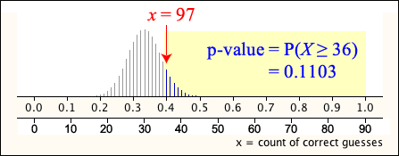

The null and alternative hypotheses are treated differently in statistical hypothesis testing. We compare them by asking ...
Are the data consistent with the null hypothesis?
A hypothesis test is based on a p-value — the probability of getting a value of the test statistic as "extreme" as the one calculated from the actual data set, assuming that the null hypothesis holds.
Definition
For a hypothesis test using a test statistic \(T\), if the values of \(T\) that favour the alternative hypothesis at least as much as the observed value of the test statistic, \(t\), are the set \(A\), the p-value for the test is the probability of such a value when the null hypothesis holds,
\[ \text{p-value} \;\;=\;\; P(T \in A \mid H_0) \]For example, if large values of the test statistic, \(T\), would favour the alternative hypothesis and it is evaluated to be \(t\) from the recorded data, the p-value is
\[ \text{p-value} \;\;=\;\; P(T \ge t \mid H_0) \]Since we know the distribution of the test statistic when the null hypothesis holds, the p-value can always be evaluated.
Interpretation
A small p-value means that our data would have been unlikely if the null hypothesis was true. This gives evidence that the data are not consistent with the null hypothesis. The following table may be regarded as an oversimplification, but can be used as a guide to interpreting p-values.
| p-value | Interpretation |
|---|---|
| over 0.1 | no evidence that the null hypothesis does not hold |
| between 0.05 and 0.1 | very weak evidence that the null hypothesis does not hold |
| between 0.01 and 0.05 | moderately strong evidence that the null hypothesis does not hold |
| under 0.01 | strong evidence that the null hypothesis does not hold |
Binomial example
If \(X\) is the number of successes in \(n = 90\) independent binomial trials, \(X \sim \BinomDistn(n=90, \pi)\). We might want to test
If \(x = 36\) successes were recorded, the p-value is the probability of 36 or more successes from a \(\BinomDistn(n=90, \diagfrac {\small 1} {\small 3})\) distribution.

There would be an 11% chance of getting 36 successes when \(\pi\) was \(\diagfrac {\small 1} {\small 3}\) so the data would not be particularly unusual if H0 was true. We would therefore conclude that the data are consistent with the null hypothesis and there is no evidence suggesting that the alternative hypothesis is really true.